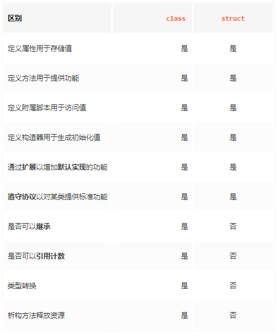

Struct与Class的共性
- 定义属性以存储值
- 定义提供功能的方法
- 使用下标语法定义下标以提供对其值的访问
- 定义初始化程序以设置其初始状态
- 扩展到超出默认实现范围的功能
- 符合协议以提供某种标准功能
Struct与Class的区别
- Class 是引用类型, Struct是值类型
- 内存管理的方式不同, 结构体可以被直接持有及访问, 结构体不会被引用,只会被复制,而类的实例只能通过引用间接访问。
- 使用类,可以通过继承来共享代码,而结构体不能被继承

关于初始化的差别
Struct的初始化
- Memberwise Initializers : Struct 会根据它所拥有的变量自带一个默认的初始化方法,我们将这个称谓Memberwise Initializers
//代码示例
struct PersonStruct{
var name : String
var age : Int
}
let person_1 = PersonStruct(name: "Swift", age: 4)
复制代码
- Default initializer: 通过给每一个属性默认值来完成初始化,但必须是每个属性都必须有默认值
//示例代码
struct Point {
//第一种设置方法
var x: Double = 0.0
var y: Double = 0.0
//第二种设置方法
init(x: Double = 0.0, y: Double = 0.0) {
self.x = x
self.y = y
}
}
let origin = Point()
复制代码
- Other initializer : 我们可以通过更灵活的参数注入来定义我们的初始化, 但只要我们用了自定义方法, 默认提供的 Memberwise Initializers就不再有效
//代码示例
struct PersonStruct{
var name : String
var age : Int
//自定义初始化
init(_ p : (name: String, age: Int)) {
self.name = p.0;
self.age = p.1;
}
//此时 默认的Memberwise Initializers会失效,
//let person_1 = PersonStruct(name: "Swift", age: 4)
let person_1 = PersonStruct((name: "Swift", age: 4))
}
复制代码
Class的初始化
Swift不会为class生成默认的init方法，我们必须明确定义class类型的对象的创建过程, 它没有Struct类似的Memberwise Init
代码示例:
class Point2D {
var x: Double
var y: Double
}
let person_2 = PersonClass(name: "Swift", age: 4)
这个代码是无法通过编译的
复制代码
- designated init : 因为class没有Memberwise Init的说法,所以我们需要给class自定义一个初始化方法, 称为designated init
//一般情况下, 我们都会为Class designated一个init方法, 并且初始化它的所有属性
class Person {
var name : String
var age : Int
init(name :String, age:Int) {
self.name = name
self.age = age
}
}
let person_2 = Person(name: "Swift", age: 4)
复制代码
- convienience init : 便利化初始化,可以将参数以 Toupe / 合适的形式注入初始化方法,有更好的语义的表达, init方法用 convienience 关键字修饰
//示例代码
class Man {
var name : String
var age : Int
convenience init(at:(name:String, age:Int)){
self.init(name : at.name, age : at.age)
}
init(name:String, age:Int) {
self.name = name
self.age = age
}
}
let man = Man(at: ("洛奇", 18))
复制代码
- failable init: 并不是我们每次得到的参数都可以直接转换成 class 中的属性,有可能参数并不是我们想要的类型, 这个时候为了更好地保证程序的安全性,稳定性,这个时候 failable init 就出现了;需要用init?的形式来定义它;
//代码示例
class Woman {
var name : String
var age : Int
convenience init?(at:(String, String)){
guard let age = Int(at.1) else { return nil }
self.init(name : at.0, age : age)
}
init(name:String, age:Int) {
self.name = name
self.age = age
}
}
let woman = Woman(at: ("memng", "18"))
复制代码
- two-phase init: 这是class对象针对继承所优化的初始化方法,通过two-phase init, 子类和基类的属性都可以正确初始化, 而这个初始化分为两个阶段, 所以称为两段式构造过程;
第一阶段: 从子类到基类让每个类都自下而上的让每一个属性都有初始值 第二阶段: 所以有属性都有初始值之后，从基类到派生类，自上而下对类的每个属性进行进一步处理
//示例代码
class Point2d {
var x : Double
var y : Double
init(x: Double, y : Double) {
self.x = x
self.y = y
}
}
let point : Point2d = Point2d(x: 2, y: 3)
class Point3d : Point2d{
var z : Double
init(x: Double = 0, y: Double = 0, z: Double = 0) {
//第一步: 先保证自下而上的让每个属性有初始值, 且self.z的初始化必须在super.init调用前
self.z = z
super.init(x: x, y: y)
//第二步: 自上而下的对每个属性进行处理
self.initRound(x: x, y: y, z: z)
}
func initRound(x: Double, y: Double, z: Double) {
self.x = round(x)
self.y = round(y)
self.z = round(z)
}
}
复制代码
关于正确理解值语义和引用语义,从而区分struct和class
- 引用类型的常量的属性值是可以修改的,而值类型的常量属性是不可以修改的
//示例代码
class PointRef {
var x : Int
var y : Int
init(x : Int, y : Int) {
self.x = x
self.y = y
}
}
struct PointValue{
var x : Int
var y : Int
}
let pointClass = PointRef(x: 10, y: 10)
let pointStruct = PointValue(x: 12, y: 12)
//pointStruct.y = 16 //值类型的常量的属性值是不可以修改的
pointClass.x = 12 //引用类型的常量的属性值是可以修改的
引用类型默认是可以修改的, 因为引用类型关注的是对象本身, 而并非是引用的值,因此它的属性默认是可以修改其值的
复制代码
- 值类型和引用类型在语义上的差别很大, 值类型的赋值只是简单的内存拷贝后,生成新的值, 而引用类型的赋值是内存地址的共同指向;
//代码示例:
class PointRef {
var x : Int
var y : Int
init(x : Int, y : Int) {
self.x = x
self.y = y
}
}
struct PointValue{
var x : Int
var y : Int
}
let pointClass = PointRef(x: 10, y: 10)
let pointStruct = PointValue(x: 12, y: 12)
var pointClass1 = pointClass
var pointStruct1 = pointStruct
//修改 class1, class也一起被修改
pointClass1.x = 16
print(pointClass.x)
//修改 V1的值, V的值并没有发生改变
pointStruct1.y = 20
print(pointStruct.y)
值类型的赋值只是简单的内存拷贝, 而引用类型的赋值是内存地址的共同指向
复制代码
关于class的继承, 我们应该有一些探讨
探讨1 : 子类会继承它的基类的方法,那么对于init方法会继承吗? 答: 派生类不会主动继承其基类的init方法
//示例代码
class Person {
var name : String
var age : Int
init(name :String, age:Int) {
self.name = name
self.age = age
}
}
class Developer : Person{
var proLaunage : String //不会 继承 基类的 init 方法
//但是如果给子类的所以属性都给一个默认初始化值, 那么子类将会继承基类的 init方法
//var progLaunage : String = "Swift"
}
//此时,如果我们编译代码, 是无法通过的, 这也就验证了 子类不会继承基类的 init方法
let iosDev = Developer(name: "luoColumn", age: 18)
//详细解释:
虽然当派生类没有定义任何designated init 方法时, 会从基类继承基类的 designnated init 方法,但由于即便继承了,也完不成其自有变量的初始化, 所以 派生类也就不会自动继承其基类的初始化方法
复制代码
探讨2: 如果一个派生类定义了所有基类的designated init，那么它也将自动继承基类所有的convenience init 方法吗? 答: 只要派生类拥有基类所有的designated init方法，他就会自动获得所有基类的convenience init方法
//代码示例
class Man {
var name : String
var age : Int
convenience init(at:(name:String, age:Int)){
self.init(name : at.name, age : at.age)
}
init(name:String, age:Int) {
self.name = name
self.age = age
}
}
class Teacher : Man{
var height : Double
init(name:String, age:Int, height:Double) {
// 先初始化self.height，然后再调用super.init初始化基类的成员, 这是 两段式构造过程
self.height = height
super.init(name: name, age: age)
}
//重写
override init(name: String, age: Int) {
self.height = 175
super.init(name: name, age: age)
}
}
//只要 override init 了 基类的 designated init方法, 就会自动继承它的 convenience init 方法
let teacher_1 = Teacher(at: ("memng", 18))
复制代码
探讨3: 永远也不要改写继承而来的方法的默认参数，因为它执行的是静态绑定的语义。
在Swift里，继承而来的方法调用是在运行时动态派发的，Swift会在运行时动态选择一个对象真正要调用的方法。但是，方法的参数，出于性能的考虑，却是静态绑定的，编译器会根据调用方法的对象的类型，绑定函数的参数
//代码示例
class Human {
var name : String
var age : Int
init(name :String, age:Int) {
self.name = name
self.age = age
}
func nameSetting(name : String = "Swift") {
}
}
class Kid : Human{
override func nameSetting(name: String = "Java") {
print("name is \(name)")
}
}
class Younger : Human{
override func nameSetting(name: String = "Python") {
print("name is \(name)")
}
}
//当 kid 和 younger 分别是 他们具体的对象类型时, 修改默认值是没问题的
let kid = Kid()
kid .nameSetting() //name is Java
let younger = Younger()
younger.nameSetting() //name is Python
// 利用多态来动态选择调用方法时, 结果却都是调用了基类中的 nameSetting方法
let human_kid : Human = Kid()
let human_you : Human = Younger()
human_kid.nameSetting() //name is Swift
human_you.nameSetting() //name is Swift
因此:
永远也不要改写继承而来的方法的默认参数，因为它执行的是静态绑定的语义
复制代码
关于class 和 struct的使用场景
在整个工程中, 那些需要有明显的生命周期的, 我们在初始化或者销毁的时候需要有特定的操作的,在进行比较时我们不是很关注他们的属性是否相同,而更关注内存地址的场景,应该用class来表述; 例如: 文件句柄，通知中心，网络接口，数据库连接，view controller等
在整个工程中, 那些不需要生命周期的,在进行比较时我们不关注它的内存地址,只关注值是否相等的,在摧毁时并不需要完成特定操作的场景,应该使用struct来表述; 例如: 时间日期,字符串,数字,错误,URL,二进制数据,通知等;